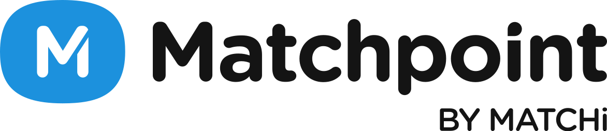

Multiplataforma
El núcleo de lo que hago: una base de código, varias plataformas.
- Flutter
- React Native
- Kotlin Multiplatform
- .NET MAUI
Abierto a nuevas oportunidades · Remoto (o presencial en Valencia)
Desarrollador de aplicaciones multiplataforma. Una sola base de código, varias plataformas. Desarrollo y mantengo apps de un producto usado por más de 1.400 clubes en 60 países — con foco en todo lo que la IA abre para construir mejor y más rápido.
Soy técnico en Desarrollo de Aplicaciones Multiplataforma y, sobre todo, alguien al que le gusta entender cómo encajan las piezas.
No he parado de crecer: cada proyecto me deja algo nuevo y procuro que el siguiente esté mejor hecho que el anterior. Me interesa el código que se lee bien, las interfaces que se sienten naturales y las herramientas de IA bien usadas — no como adorno, sino para construir cosas reales más rápido y con más criterio.
Trabajo cómodo en inglés (C1), tengo carnet de conducir y movilidad, y busco un sitio donde aportar y seguir creciendo. Si tienes un reto multiplataforma entre manos, me encantaría escucharlo.
Las herramientas son medios, no fines — pero conviene tenerlas afiladas.
El núcleo de lo que hago: una base de código, varias plataformas.
Donde paso el día. Tipados y a gusto con varios paradigmas.
De dónde tira la app y dónde viven los datos.
Mi terreno favorito ahora mismo: integrar modelos con cabeza.
Veo el producto de punta a punta: del código al servidor.
Año y medio corto en el calendario, denso en aprendizaje.

Matchpoint by Matchi · Valencia · En plantilla desde jun 2025 (prácticas mar — jun 2025)
Software de gestión para centros deportivos usado por más de 1.400 clubes en 60 países. Mi foco son las aplicaciones: desarrollo y mantenimiento de las apps multiplataforma del producto.
Trabajo también en la gestión de servidores y proyectos, despliegues en IIS y bases de datos, así que veo el producto de punta a punta: del código que escribo a la infraestructura donde corre. En el día a día me coordino con el equipo a través de Monday y Slack.
Formación reglada · IES Serpis (Valencia)
Bases sólidas de programación, bases de datos, desarrollo móvil y de escritorio, y trabajo por proyectos. Donde descubrí que esto era lo mío.
Formación reglada · IES Serpis (Valencia)
Etapa de fundamentos donde empecé a orientarme hacia la tecnología antes de dar el salto al desarrollo de aplicaciones.
Estoy abierto a oportunidades donde pueda aportar y seguir creciendo. Escríbeme y te contesto rápido.
diegocerro04@gmail.com